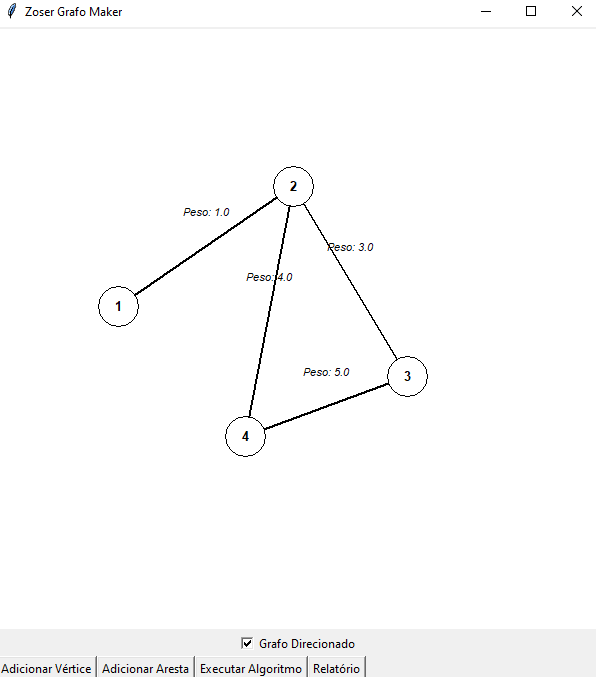
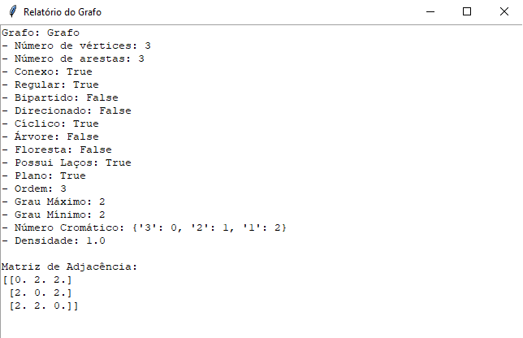
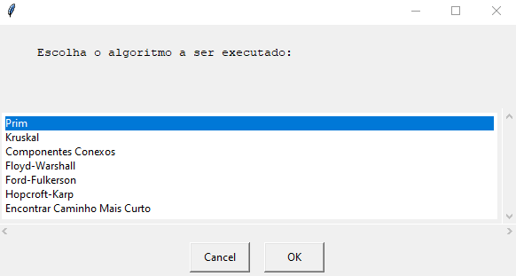

O GrafoMaker é uma ferramenta interativa e educacional projetada para alunos de Ciência da Computação, fornecendo uma abordagem prática para a teoria dos grafos. Este aplicativo combina elementos visuais intuitivos com conceitos fundamentais de grafos, oferecendo uma experiência de aprendizado envolvente e eficaz.


